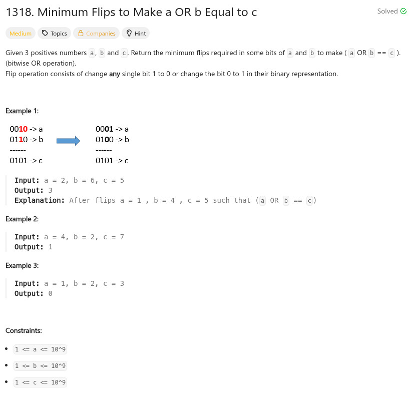

題目：

int minFlips(int a, int b, int c)
{
int r = 0;
int cc = 0;
int t = (a | b) ^ c;
for (cc = 0; cc < 32; cc++) {
if (t & 1) {
r += 1;
if ((a & 1) && (b &1)) {
r += 1;
}
}
t >>= 1;
a >>= 1;
b >>= 1;
}
return r;
}